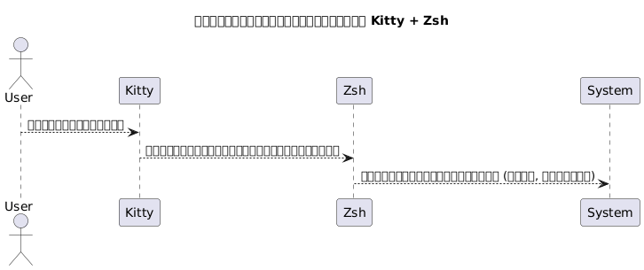
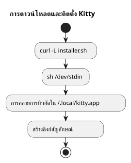
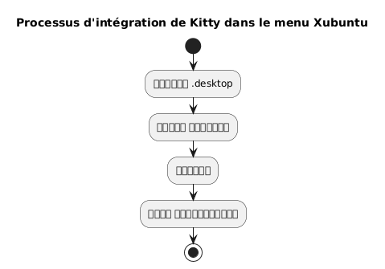
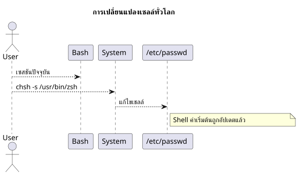
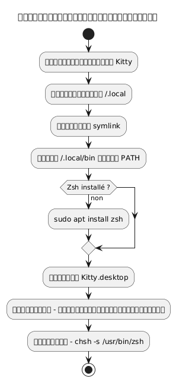
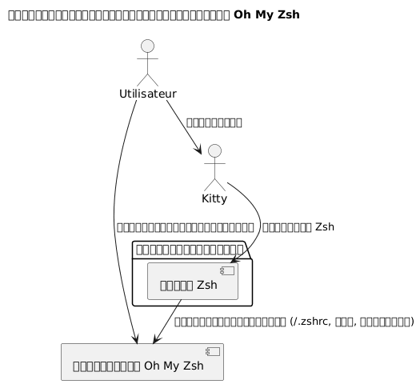
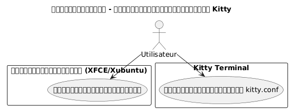
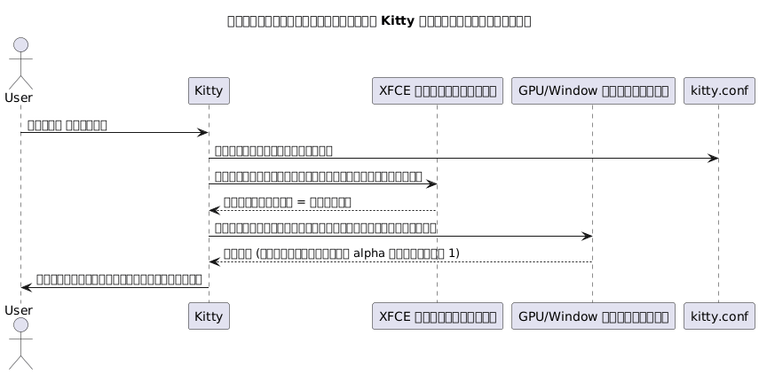

ติดตั้งเทอร์มินัล Kitty และตั้งค่า Zsh เป็น shell เริ่มต้นใน Xubuntu
เผยแพร่เมื่อ 07 May 2026 อัปเดตเมื่อ 2026-05-07
- ทำไมต้องเลือก Kitty และ Zsh ?
- ข้อกำหนดของระบบ
- การดาวน์โหลดและติดตั้งของ Kitty
- การรวม Kitty เข้ากับ Xubuntu
- การติดตั้ง Zsh
- ตั้งค่า Zsh เป็น Shell เริ่มต้น
- การตั้งค่า Zsh (แบบเลือกได้)
- สรุปกระบวนการทำงานทั้งหมด
- การตรวจสอบขั้นสุดท้าย
- การติดตั้งและกำหนดค่า Oh My Zsh
- เปิดใช้ความโปร่งใสใน Kitty
- ปิดการใช้งานเสียงบี๊ป (audible bell)
- การอัปเดตของ Kitty
- อ้างอิง
- สรุป
คู่มือนี้อธิบายทีละขั้นตอนวิธีการติดตั้งเทอร์มินัล kitty บน Xubuntu กำหนดค่าให้ถูกต้องและแทนที่ bash ด้วย zsh เป็นเชลล์เริ่มต้น โครงการ kitty สามารถดูได้ที่นี่: https://github.com/kovidgoyal/kitty.
(empty) Kitty เป็นเทอร์มินัลที่ทันสมัย รวดเร็วและปรับแต่งได้ เหมาะอย่างยิ่งสำหรับนักพัฒนาที่ต้องการสูง No translation needed because no source text was supplied. Nothing follows these instructions.
ทำไมต้องเลือก Kitty และ Zsh ?
คิตตี้นั้นโดดเด่นโดย:
-
ประสิทธิภาพที่เหนือกว่า เนื่องจากการเร่งความเร็วโดย GPU,
-
การตั้งค่าที่อิงกับไฟล์ข้อความเดี่ยวทั้งหมด
-
การจัดการฟอนต์และลิเกเจอร์ที่ยอดเยี่ยม
Zsh เป็นเชลล์แบบโต้ตอบที่มีประสิทธิภาพสูงซึ่งเสนอ :
-
การเติมเต็มอย่างชาญฉลาด
-
พรอมต์ที่ปรับแต่งได้,
-
ความเข้ากันได้สูงกับ bash
การรวมกันของ Kitty และ Zsh จะทำให้คุณได้สภาพแวดล้อมที่มีประสิทธิภาพและสวยงาม

|
คู่มือนี้โดยเจตนา จำกัดเฉพาะการติดตั้งผ่านสคริปต์และ Xubuntu |
ข้อกำหนดของระบบ
ก่อนที่จะเริ่ม โปรดตรวจสอบให้แน่ใจว่าคุณมี :
-
Xubuntu ติดตั้งแล้ว,
-
การเข้าถึงอินเทอร์เน็ต,
-
เชลล์บัชที่ใช้งานได้ สำหรับเรียกใช้สคริปต์.
ตรวจสอบสภาพแวดล้อมของคุณ :
uname -a
lsb_release -aการดาวน์โหลดและติดตั้งของ Kitty
Kitty แนะนำให้ติดตั้งผ่านสคริปต์อย่างเป็นทางการซึ่งจะวางไฟล์ไว้ใน`~/.local/kitty.app`.
|
วิธีนี้เป็นอิสระจากผู้จัดการแพ็คเกจ (ไม่มี`apt`). |
ดาวน์โหลดสคริปต์การติดตั้ง
ดำเนินการคำสั่งต่อไปนี้：
curl -L https://sw.kovidgoyal.net/kitty/installer.sh | sh /dev/stdinคำสั่งนี้ทำการ :
-
การดาวน์โหลดไบนารี,
-
การสกัดใน`~/.local/kitty.app`,
-
การสร้างลิงก์เชื่อมโยงเชิงสัญลักษณ์.

การสร้างลิงก์เชิงสัญลักษณ์
เพื่อที่จะสามารถเรียกใช้`kitty`จากเทอร์มินัล สร้างลิงก์สัญลักษณ์ :
ln -s ~/.local/kitty.app/bin/kitty ~/.local/bin/kittyเพิ่ม`~/.local/bin`ให้เพิ่มเข้าไปใน PATH ของคุณ หากคุณยังไม่ได้ทำเช่นนั้น :
echo 'export PATH="$HOME/.local/bin:$PATH"' >> ~/.zshrc
source ~/.zshrcคุณสามารถตรวจสอบการติดตั้งได้ :
kitty --versionการรวม Kitty เข้ากับ Xubuntu
เพื่อให้ Kitty ปรากฏในเมนูแอปพลิเคชัน :
คัดลอกไฟล์บนเดสก์ท็อป
คัดลอกไฟล์`.desktop`ที่ให้ไว้ :
cp ~/.local/kitty.app/share/applications/kitty.desktop ~/.local/share/applications/แก้ไขไฟล์เดสก์ท็อป
แก้ไขไฟล์ :
nano ~/.local/share/applications/kitty.desktopตรวจสอบหรือแก้ไขบรรทัดต่อไปนี้ :
[Desktop Entry]
Version=1.0
Type=Application
Name=Kitty Terminal
Comment=Fast GPU-based terminal emulator
Exec=/home/$USER/.local/kitty.app/bin/kitty
Icon=kitty
Categories=System;TerminalEmulator;แทนที่`YOURUSER`โดยชื่อผู้ใช้ของคุณ

ตั้งค่า Kitty เป็นเทอร์มินัลเริ่มต้น (ตัวเลือก)
เพื่อให้ Kitty เป็นเทอร์มินัลที่เปิดเป็นค่าเริ่มต้น :
sudo update-alternatives --install /usr/bin/x-terminal-emulator x-terminal-emulator ~/.local/kitty.app/bin/kitty 50
sudo update-alternatives --config x-terminal-emulatorเลือก`kitty`ในเมนูที่เสนอ.
การติดตั้ง Zsh
หาก Zsh ยังไม่ได้ติดตั้ง ให้รัน :
sudo apt install zshตรวจสอบการติดตั้ง :
zsh --versionตั้งค่า Zsh เป็น Shell เริ่มต้น
คุณสามารถเปลี่ยนเชลล์ของคุณได้ทั่วโลกหรือเฉพาะใน Kitty เท่านั้น
วิธีทั่วไป (สำหรับเทอร์มินัลทั้งหมด)
ระบุเส้นทางแบบสัมบูรณ์ :
which zshโดยทั่วไป`/usr/bin/zsh`.
แก้ไข Shell เริ่มต้น :
chsh -s /usr/bin/zshออกจากระบบและลงชื่อเข้าใช้อีกครั้ง.

วิธีเฉพาะของคิตตี้
หากคุณต้องการเพียงเปลี่ยนเชลล์ใน Kitty ให้แก้ไขไฟล์การตั้งค่า :
nano ~/.config/kitty/kitty.confเพิ่มบรรทัดนี้ :
shell zshบันทึกและรีสตาร์ท Kitty
การตั้งค่า Zsh (แบบเลือกได้)
เพื่อปรับแต่ง Zsh ของคุณ :
สร้างไฟล์ .zshrc
touch ~/.zshrc
nano ~/.zshrcตัวอย่างการตั้งค่าขั้นต่ำ
export ZSH_THEME="robbyrussell"
export PATH="$HOME/.local/bin:$PATH"
alias ll="ls -la"สรุปกระบวนการทำงานทั้งหมด
แผนภาพด้านล่างนี้สรุปกระบวนการทั้งหมด :

การตรวจสอบขั้นสุดท้าย
เปิด Kitty :
kittyคุณควรเห็นว่า`zsh`กำลังทำงาน :
echo $SHELLผลลัพธ์ที่คาดหวัง :
/usr/bin/zsh
เพื่อเปลี่ยนขนาดแบบอักษรในคิตตี้, ต้องปรับพารามิเตอร์`font_size`在ไฟล์การตั้งค่า. ขั้นตอนโดยละเอียด :
เปิดไฟล์การกำหนดค่า
ไฟล์กำหนดค่าหลักโดยปกติจะอยู่ใน:
~/.config/kitty/kitty.confหากไฟล์นี้ยังไม่มีอยู่ คุณสามารถสร้างมันได้ (Empty response)
nano ~/.config/kitty/kitty.confเพิ่มหรือแก้ไข `font_size
เพิ่มคำสั่งต่อไปนี้ หรือแก้ไขหากมีอยู่แล้ว :
font_size 14.0ที่นี่`14.0`ตรงกับขนาดที่ต้องการ. คุณสามารถใส่ค่าทศนิยมใด ๆ ก็ได้ เช่น`12.0`, 15.5, เป็นต้น
บันทึกและเริ่มใหม่ Kitty
-
บันทึก`Ctrl + O`, แล้ว`Entrée`) และออก (
Ctrl + X) ถ้าคุณใช้`nano`. -
ปิดหน้าต่างทั้งหมดของ Kitty แล้วจึงเริ่มการทำงานเทอร์มินัลใหม่เพื่อให้การเปลี่ยนแปลงมีผล
✅ การปรับแบบไดนามิก (ซูมชั่วคราว)
หากคุณต้องการซูม/ซูมออกชั่วคราวโดยไม่เปลี่ยนการตั้งค่า ให้ใช้ทางลัดแป้นพิมพ์เริ่มต้น :
-
เพิ่มขนาดฟอนต์(blank)
Ctrl + Shift + =
-
ลดขนาดฟอนต์:
Ctrl + Shift + -
-
รีเซ็ตขนาด:
Ctrl + Shift + Backspace
การตั้งค่าเหล่านี้จะไม่คงอยู่หลังจากการปิดเทอร์มินัล
การติดตั้งและกำหนดค่า Oh My Zsh
เมื่อได้ติดตั้งและกำหนดค่า Zsh เป็นชอลล์เริ่มต้นแล้ว คุณสามารถปรับปรุงสภาพแวดล้อมของคุณด้วย Oh My Zsh ซึ่งเป็นเฟรมเวิร์กจัดการการกำหนดค่า Zsh ที่ให้บริการ:
-
คอลเลกชันของธีมสำหรับพรอมต์,
-
หลายปลั๊กอิน,
-
การจัดระเบียบที่ชัดเจนของการกำหนดค่า
การติดตั้ง Oh My Zsh
ตรวจสอบให้แน่ใจว่า Zsh กำลังทำงานอยู่
zsh --versionหากจำเป็น ให้เรียกใช้ :
zshจากนั้นดาวน์โหลดและรันสคริปต์ติดตั้งอย่างเป็นทางการ:
sh -c "$(curl -fsSL https://raw.githubusercontent.com/ohmyzsh/ohmyzsh/master/tools/install.sh)"สคริปต์นี้ :
-
สร้างโฟลเดอร์`~/.oh-my-zsh`,
-
คุณสามารถบันทึกไฟล์ของคุณได้หากต้องการ`~/.zshrc`,
-
เปิดใช้งานพรอมต์ใหม่โดยอัตโนมัติ。
เปลี่ยนธีม
เปิดไฟล์การกำหนดค่าของคุณ:
nano ~/.zshrcแก้ไขตัวแปร`ZSH_THEME`เพื่อเลือกธีมอื่น ๆ (เช่น`agnoster`) :
ZSH_THEME="agnoster
บันทึกแล้วโหลดการตั้งค่าใหม่ :
source ~/.zshrcการตรวจสอบ
เปิด Kitty และตรวจสอบว่า Prompt ได้เปลี่ยนแปลงแล้วอย่างถูกต้อง คุณสามารถยืนยันว่า Oh My Zsh กำลังทำงานอยู่ได้โดยการรัน:
echo $ZSHผลลัพธ์ควรจะคล้ายกับ :
/home/votre_utilisateur/.oh-my-zsh
แผนภาพกรณีการใช้งาน

เปิดใช้ความโปร่งใสใน Kitty
หนึ่งในฟีเจอร์ที่ผู้ใช้ชื่นชอบมากที่สุดของ Kitty คือความสามารถในการเพิ่ม transparence ให้กับพื้นหลังของเทอร์มินัล ทำให้สามารถมองเห็นสภาพแวดล้อมด้านล่างได้อย่างจาง ๆ เช่น (หน้าต่าง, เดสก์ท็อป เป็นต้น) ซึ่งมีประโยชน์อย่างยิ่งเมื่อทำงานหลายงานพร้อมกัน
ข้อกำหนดเบื้องต้นสำหรับความโปร่งใส
ความโปร่งใสใน Kitty ขึ้นอยู่กับผู้สร้างหน้าต่างใช้โดยสภาพแวดล้อมกราฟิก ใน Xubuntu (ซึ่งใช้พื้นฐานของ XFCE) โปรดตรวจสอบให้แน่ใจว่าการประพันธ์ถูกเปิดใช้งาน.
-
คลิกขวาบนเดสก์ท็อป > การตั้งค่า >การตั้งค่าตัวจัดการหน้าต่าง,
-
แท็บผู้ประพันธ์เพลง: ช่อง "Activer la composition" ต้องทำเครื่องหมาย.

การกำหนดค่าความโปร่งใสในไฟล์ kitty.conf
เปิดไฟล์การกำหนดค่าของคุณ`~/.config/kitty/kitty.conf`:
nano ~/.config/kitty/kitty.confเพิ่มหรือแก้ไขบรรทัดต่อไปนี้ :
background_opacity 0.85พารามิเตอร์นี้ยอมรับค่าอยู่ระหว่าง :
-
1.0→ ทึบ (ไม่มีความโปร่งใส) -
`0.0`โปร่งใสอย่างสมบูรณ์ (ใช้ไม่ได้)
-
ค่ากลางเช่น`0.90`,
0.75, ฯลฯ
การประนีประนอมทางสายตาที่ดีมักจะอยู่ระหว่าง`0.85` et 0.95.
รีสตาร์ท Kitty
ปิดทุกอินสแตนซ์ของ Kitty แล้วเปิดหน้าต่างใหม่เพื่อให้การเปลี่ยนแปลงมีผล :
kittyส่วนเสริมที่เป็นไปได้
หากคุณใช้พื้นหลังเทอร์มินัลแบบกำหนดเอง คุณยังสามารถตั้งสีพื้นหลังที่มีความโปร่งใส (ในรูปแบบ RGBA) :
background #1e1e2effส่วนประกอบสุดท้าย (ff) แสดงความทึบแสง (ของ`00` à ff)
แผนภาพลำดับ - การกำหนดค่าเริ่มต้นของ Kitty พร้อมความโปร่งใส

ข้อจำกัดที่ทราบแล้ว
|
ความโปร่งใสไม่ทำงานถ้า : - คอมโพสิตอร์ XFCE ถูกปิดใช้งาน, - กำลังใช้ตัวจัดการหน้าต่างที่ไม่เข้ากันได้, - คุณกำลังใช้ Kitty ในโหมด tmux พื้นหลังโดยไม่มีการรองรับความโปร่งใส |
ปิดการใช้งานเสียงบี๊ป (audible bell)
โดยค่าเริ่มต้น Kitty จะออกเสียงเป็น bip เมื่อมีการป้อนคำสั่งที่ผิดพลาดหรือเหตุการณ์เทอร์มินัลกระตุ้นเกิดขึ้น เสียงนี้อาจทำให้รู้สึกกวนใจได้อย่างรวดเร็ว โดยเฉพาะในสภาพแวดล้อมการพัฒนาที่เข้มข้น
เพื่อปิดการทำงานนี้ ให้เพิ่มคำสั่งต่อไปนี้ลงในไฟล์`~/.config/kitty/kitty.conf`:
audible_bell no|
คุณยังสามารถเปิดใช้งาน การตอบกลับด้วยภาพ แทนเสียงบี๊พได้ : |
การอัปเดตของ Kitty
เนื่องจาก Kitty ได้รับการติดตั้งผ่านสคริปต์และไม่ใช่ตัวจัดการแพ็กเกจ การอัปเดตจึงทำได้โดยเรียกใช้สคริปต์ติดตั้งอย่างเป็นทางการซ้ำอีกครั้ง ทำให้สามารถดาวน์โหลดรุ่นล่าสุดและอัปเดตการติดตั้งที่มีอยู่ของคุณใน`~/.local/kitty.app`.
|
คำต่อท้าย`.app`บนเส้นทาง`~/.local/kitty.app`เป็นข้อตกลงในการติดตั้ง Kitty บน Linux ผ่านสคริปต์อย่างเป็นทางการของมัน และไม่ได้บ่งชี้ว่าเป็นความเข้ากันได้เฉพาะกับ macOS ในกรณีใดๆ |
|
ก่อนที่จะเรียกใช้คำสั่งอัปเดต โปรดตรวจสอบว่าคุณอยู่ในไดเรกทอรีส่วนตัวของคุณ( |
เรียกใช้คำสั่งต่อไปนี้จากไดเรกทอรีบ้านของคุณ :
curl -L https://sw.kovidgoyal.net/kitty/installer.sh | sh /dev/stdinสคริปต์นี้จะจัดการ :
-
ดาวน์โหลดไบนารีของเวอร์ชั่นใหม่
-
ถอดไฟล์ออกใน`~/.local/kitty.app`.
-
อัปเดตลิงก์สัญลักษณ์ หากจำเป็น。
หลังจากอัปเดตแล้ว แนะนำให้ปิดอินสแตนซ์ทั้งหมดของ Kitty และเริ่มต้นใหม่ เพื่อให้แน่ใจว่าเวอร์ชันใหม่ได้รับการพิจารณาอย่างเหมาะสม.
อ้างอิง
หากคุณต้องการศึกษาการปรับแต่งเพิ่มเติม กรุณาดูจากเอกสารทางการ:
สรุป
คุณมีแล้วในตอนนี้:
-
ของเทอร์มินัลที่ทันสมัยและทำงานได้ดี (Kitty)
-
เชลล์ที่ทรงพลังและสามารถปรับแต่งได้ (Zsh)
-
ของการตั้งค่าแบบสะอาดและไม่ขึ้นกับแพ็คเกจของระบบ
-
ของเทอร์มินัลที่สวยงามและใช้งานได้ดีพร้อมด้วย Oh My Zsh